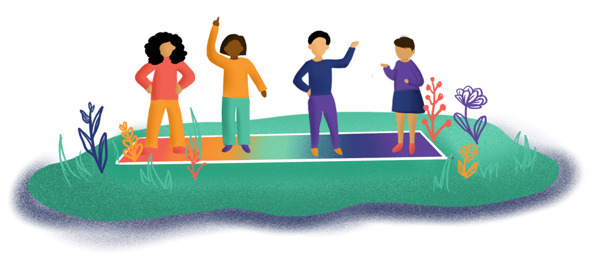
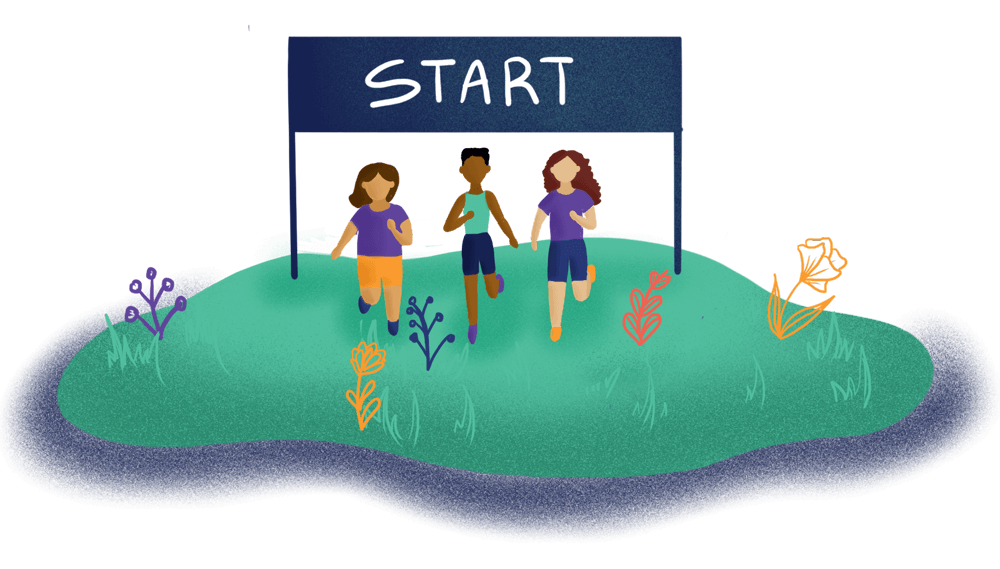

01
So you are thinking about doing a Youth Participatory Action Research (YPAR) project in your community or organization? Are you ready? In this first stepping stone, you will learn more about Community Futures, Community Lore's approach to YPAR, assess your community and organization's readiness to do a project, plan and prepare for your project, and recruit your team.
Ready? Set? Go!

download
61 page PDF | 27.4 MB
Sometimes it’s hard for people to be in the same place at the same time. To adapt plans and activities for a virtual environment, check out our Tips for Remote YPAR.

Time Commitment:
3-5 sessions
1.
Read these for ideas and guidance:
CFCL Core Values (tapping into our motivation and inspiration for this work)
What is YPAR? (becoming more familiar with youth participatory action research)
The 9 Stepping Stones (learning about our approach to YPAR)
How to Use the Stepping Stone Guides (using and adapting this resource to fit your needs)
2.
Do this:
Ready or Not? (assessing organizational and community readiness)
Refer to these:
Spectrum of Youth Leadership and Participation (recognizing degrees of youth engagement)
For Our Town (adapting to local context, conditions, and goals)
Our North Star (creating your vision for youth voice and intergenerational partnership)
In It Together (understanding how adults can stop adultism)
3.
Refer to these for ideas and guidance:
Snapshots (exploring stories from other YPAR projects)
If We Only Knew... (gaining advice from other YPAR projects)
4.
Do these:
Our Compass (clarifying your purpose, outcomes and intended impact)
Rules of the Journey (deciding on project givens, expectations, and parameters)
Resources (creating a project budget and raising funds)
Organizing Community Support (developing community and gate-keeper buy-in & MOUs)
Team Recruitment and Hiring (creating job descriptions, applications, flyers)
Refer to these for ideas & guidance:
Team Roles (clarifying everyone's roles and responsibilities)
Charting Our Path (creating a project timeline and exploring examples)
Day by Day (creating team agendas and activity plans)
Bonus Materials (history of CFCL, roots of YPAR)
download